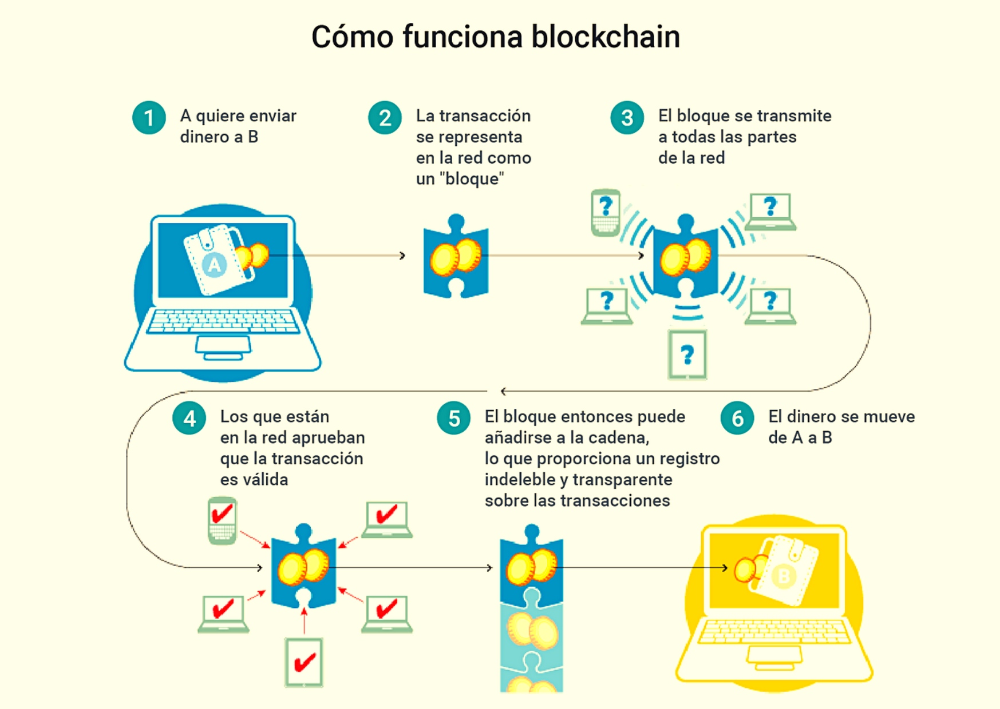

Criptopedia es un espacio en donde vas a aprender todo lo que necesitas saber sobre criptomonedas, de forma simple y a tu propio ritmo. Sabemos que iniciarse en el mundo cripto puede parecer confuso y abrumador la primera vez, es por eso que si ya tomaste la decisión de comenzar a aprender o si querés conocer funciona, nosotros te acompañamos en ese proceso, como lo hicimos nosotros.
Desde Academia Cripto, traducimos conceptos complejos y los desmenuzamos/fragmentamos explicando paso a paso para que entiendas de forma clara y precisa cómo funciona el mundo cripto, además vas a poder volver sobre los temas que necesites afianzar o esclarecer, todas las veces que quieras. Nunca se termina de aprender así que irémos sumando contenido.
El dinero representa valor, si hago un trabajo este representa un valor. Luego puedo usar ese dinero
para obtener algo de valor. A través de la historia el valor ha tomado muchas formas y las personas
hemos utilizado diferentes materiales para representar el dinero como por ejemplo la sal, el trigo, las
conchas y cómo imaginas el oro, estos fueron utilizados como medios de intercambio de valor.
Para que algo represente un valor las personas primero debemos confiar en que es valioso y
continuará siendo valioso un tiempo adecuado o suficiente para poder contar con ese valor en el
futuro.
Hasta hace unos 100 años, siempre confiamos en algo para representar el dinero, sin embargo en
el camino cambiamos nuestro modelo; en vez de confiar en algo pasamos a confiar en alguien. Ya
que con el tiempo, a las personas les pareció más complicado moverse libremente cargando barras
de oro u otras formas de dinero y se inventó la moneda de papel o billete. El banco o gobierno
ofrecía apropiarse de tu oro, en ese momento por ejemplo valía $1000 y a cambio, el banco te
entregaba ‘certificados de recibo’ lo que hoy llamamos billetes. Además de ser más fácil de
llevar los billetes se podían intercambiar por valores menores, como una taza de té, sin tener
que cortar la barra de oro en muchos pedazos.
De esta manera comenzó el uso del papel como moneda, como instrumento de practicidad y
conveniencia. Con el paso del tiempo y por los cambios macroeconómicos la relación entre el
recibo de papel y el oro que representaba se rompió.
Explicar el camino que nos separó del patrón oro es muy complejo, pero podemos indicar que los
gobiernos dijeron a las personas que el mismo gobierno sería responsable por el valor del papel
moneda; esto siguió funcionando por la confianza. Aunque no hay ningún bien que respalde a la
moneda de papel las personas confían en el gobierno.
La palabra ‘Fiat’ proviene del latín, que significa ‘por decreto’ o ‘consentimiento’, ya sean
los dólares, euros, pesos o cualquier otra moneda tienen valor porque el gobierno ordena que lo
tengan, es lo que se conoce como moneda de curso legal, monedas o billetes que deben ser
aceptados si se ofrecen como pago.
Entonces, el modelo de confianza ha cambiado, de confiar en algo pasamos a confiar en alguien,
en el gobierno. El dinero fiat tiene dos desventajas principales, la primera es que es
centralizada, ya que hay una autoridad central que lo controla y lo emite, el gobierno o el
banco central. La otra desventaja es que no está limitado en cantidad, el gobierno o banco
central puede imprimir tanto como lo desea, de esta manera infla la oferta de dinero en el
mercado, esto sucede en todos los países, en algunos más que en otros.
Las criptomonedas, también llamadas criptodivisas o criptoactivos, son dinero digital, a diferencia del dinero común que conocemos y del que mencionamos anteriormente las criptos no son emitidas ni reguladas por ningún ente gubernamental.
Las criptos tienen varias ventajas, entre ellas las más significativas son:
Es un tipo de estructuración y organización de datos basado en bloques que están interconectados.
"Blockchain", como se conoce en inglés a la cadena de bloques, es una tecnología de estructuración de datos. La misma consiste en agrupar la información en bloques que están interconectados por algún tipo de código encriptado. El código encriptado es único y surge desde la información que almacena el bloque
En la blockchain, el código encriptado que posee cada bloque está relacionado con el mismo código encriptado del bloque anterior de la cadena.
De esta forma, se realiza una cadena de información encriptada, de manera que, para cambiar un solo dato de información, se requiera cambiar toda la información completa de toda la cadena de bloques.
La tecnología blockchain es muy utilizada para proteger la información del funcionamiento de las criptomonedas. Ya que hablamos de dinero, la blockchain permite que toda la información referente a las transacciones de criptomonedas se pueda mantener pública, abierta para todos, libre, y sobre todo segura.
Las criptomonedas son legales, ya que no existe ninguna ley que restrinja su uso, comercialización o resguardo.
La primera y única definición normativa en la Argentina del concepto “moneda virtual”, que fue dada por la Unidad de Información Financiera (UIF), mediante la Resolución 300/2014 (Boletín Oficial, 10/07/2014).
Según la UIF, las monedas virtuales son “…la representación digital de valor que puede ser objeto de comercio digital y cuyas funciones son la de constituir un medio de intercambio, y/o una unidad de cuenta, y/o una reserva de valor, pero que no tienen curso legal, ni se emiten, ni se encuentran garantizadas por ningún país o jurisdicción.
En este sentido, las monedas virtuales se diferencian del dinero electrónico, que es un mecanismo para transferir digitalmente monedas fiduciarias, es decir, mediante el cual se transfieren electrónicamente monedas que tienen curso legal en algún país o jurisdicción”.
¿Qué sucede? Como bien señala Marcos Zócaro (julio, 2020), la definición de la UIF abarca solo a las “monedas virtuales” y no a las “monedas digitales” o “criptomonedas”.
Por su parte, como también nos indica el especialista, el organismo internacional GAFI sostiene que por “monedas digitales” debe entenderse “…una representación digital de cualquier moneda virtual (no dinero fiduciario) o de dinero electrónico (dinero fiduciario)…” (GAFI, 2014).
Sin embargo, ni la UIF ni ningún otro organismo local ha brindado una nueva definición de qué se debe entender por “monedas virtuales”. Recién con la reforma tributaria de 2017, se incorporó la expresión “moneda digital” al cuerpo normativo argentino.
En conclusión, no contamos con una clara, completa y actualizada definición de los conceptos “moneda virtual”, “moneda digital”, “criptomonedas” y “criptoactivo”. Por esta carencia de regulación, no existe ninguna restricción que afecte su uso en la Argentina, y por lo tanto, hace completamente legal el envío, recepción, compra, venta y resguardo de criptomonedas en el país.